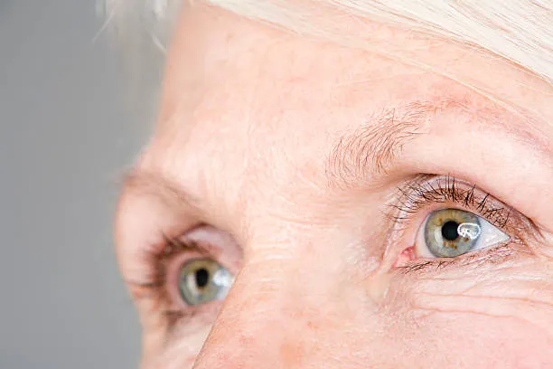

Cuidar tus ojos es esencial para mantener una buena salud visual a lo largo de tu vida.
Servicios que ofrecemosProtege tus ojos con estos simples pasos:
Asegúrate de mantener una visión nítida y saludable mediante la adopción de medidas preventivas
Descubre opciones de tratamiento personalizadas y obtén orientación experta
Explora Nuestros Objetivos ¡Bienvenido a nuestra plataforma de metas y sueños! Sumérgete en un mundo donde cada paso nos acerca a la excelencia. Descubre lo que nos impulsa a alcanzar nuevas alturas y a servirte mejor cada día.
Ver más